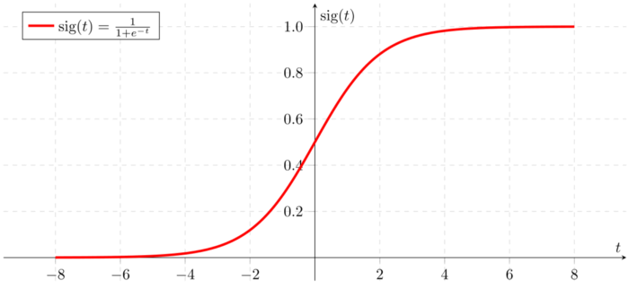

Topic 2.4: Logistic regression¶
This notebook combines theory with exercises to support the understanding of logistic regression in computer-aided diagnosis. Implement all functions in the code folder of your cloned repository, and test it in this notebook after implementation by importing your functions to this notebook. Use available markdown sections to fill in your answers to questions as you proceed through the notebook.
Contents:
Logistic regression (theory)
Implementing the components of logistic regression
Implementing logistic regression
[ ]:
%load_ext autoreload
%autoreload 2

1. Logistic regression (theory)¶
The logistic regression classifier can be considered as an extension of linear regression. However, logistic regression predicts whether something is True or False instead of predicting a continuous variable like height, for instance. Instead of fitting a line to the data, logistic regression fits an “S”-shaped curve (the sigmoid function) ranging from \(0\) to \(1\):

Figure from “Logistic regression - detailed overview by Saishruthi Swaminathan”
Logistic curve thus predicts the probability of an observation being classified into certain group. Logistic regression tests if a variable’s effect on the prediction is significantly different from \(0\). Its ability to provide probabilities and classify new samples using continuous and discrete measurements makes it a popular machine learning approach.Logistic regression does not have the same concept of residuals unlike linear regression, i.e. the least squares method cannot be applied and the correlation \(R^{2}\) cannot be calculated. Instead, the concept of maximum likelihood is used. In medical applications, logistic regression serves for mortality prediction in injured patients or as a predictor of developing a certain disease.
2. Implementing the components of logistic regression¶
For a binary classification problem (a classification problem with two classes), logistic regression predicts the probability that a sample x belongs to one of the classes:
We can view this expression as passing the output from a linear regression model \(\boldsymbol{\theta}^\intercal \mathbf{x}\) through the sigmoid function \(\sigma(\cdot)\) that “squashes” the value between 0 and 1 making it possible to be interpreted as a probability.
The loss function for logistic regression is the negative log-likelihood (NLL):
Compared to linear regression, there is no closed-form solution for the optimal parameters of the model (we cannot set the derivative of \(J(\boldsymbol\theta)\) to zero and solve for \(\boldsymbol\theta\)). The NLL loss is optimised with the gradient descent method, similar to intensity-based image registration covered in the Registration topic of this course.
The provided logistic_regression() Python script in SECTION 2 of the cad_tests.py module implements all necessary steps for training a logistic regression model on a toy dataset. However, the code will not work as is because two of the functions it depends on (sigmoid() and lr_nll()) are not implemented yet.

Exercise 2.1:¶
Implement the computation of the sigmoid function in sigmoid() in SECTION 2 of the cads.py module. You will test your implementation in the next exercise.
Exercise 2.2:¶
Implement the computation of the negative log-likelihood in lr_nll in SECTION 2 of the cads.py module. You will test your implementation in the next exercise.

Question 2.1:¶
Suppose that you have two logistic regression models that predict \(p(y=1 | \mathbf{x})\) and a validation dataset with three samples with labels 1, 0 and 1. The first model predicts the following probabilities for the three validation samples: 0.9, 0.4 and 0.7. The second model predicts 0.7. 0.5 and 0.9. Which of the two models has a better performance on the validation set? How did you come to this conclusion?
Type your answer here
## 3. Implementing logistic regression
Exercise 3.1:¶
The provided logistic_regression() Python script implements all necessary steps for training a logistic regression model on a toy dataset.
The first part of the script generates and visualises a dataset for a binary classification problem. The code generates both a training and a validation dataset, which can be used to monitor for overfitting during the training process. The second part implements training of logistic regression with stochastic gradient descent. The training process is visualised in two ways: a scatter plot of the training data along with the linear decision boundary, and a plot of the training and validation loss as a function of the number of iterations (this is similar to the plot of the similarity vs. the number of iteration for intensity-baser image registration).
Read through the code and comments and make sure you understand what it does (you can skip the visualisation part as it is not relevant for understanding logistic regression and stochastic gradient desent).
If you have implemented sigmoid() and lr_nll() correctly and run logistic_regression(), the results should look like on the figure below (it will most likely not be exactly the same as the toy dataset is randomly generated).

[1]:
%matplotlib inline
import sys
sys.path.append("../code")
from IPython.display import display, clear_output, HTML
from cad_tests import logistic_regression
logistic_regression()
Question 3.1:¶
What is the difference between “regular” gradient descent and stochastic gradient descent? What is the advantage of one over the other?
Type your answer here
Question 3.2:¶
In the figure above, the training loss curve has a noisy appearance, whereas the validation loss curve is relatively smooth. Why is this the case (HINT: How will the appearance of the training loss curve change if you increase the batch size parameter?).
Type your answer here
Question 3.3:¶
Based on the training curves in the figure above, would you say that the model has overfitted the training dataset? Motivate your answer.
Type your answer here
Question 3.4:¶
Assuming that you have trained a model and are satisfied with the generalisation performance, how can you use the model to predict the class label \(y\) for an unknown test sample \(\mathbf{x}\). (HINT: Remember that the model predicts a probability. How can this probability be converted to a binary class label?).
Type your answer here
References¶
[1] Recommended reading: Peng, Chao-Ying J. An Introduction to Logistic Regression Analysis and Reporting, The Journal of Educational Research (2002)